load("data/midiPISA.rda")Görselleştirme
Bu derste kullanacağımız midiPISA veri seti;
öğrenci id (OGRENCIID),
sınıf düzeyi (SINIF),
cinsiyet (CINSIYET),
anne eğitim düzeyi (Anne_Egitim),
baba eğitim düzeyi (Baba_Egitim),
okumaktan zevk alma (OKUMA_ZEVK), ST097Q01TA, ST097Q02TA, ST097Q03TA, ST097Q04TA, ST097Q05TA,
okuma puanı olası değer 1 (ODOKUMA1), okuma puanı olası değer 2 (ODOKUMA2), okuma puanı olası değer 3 (ODOKUMA3), okuma puanı olası değer 4 (ODOKUMA4), okuma puanı olası değer 5 (ODOKUMA5)
değişkenleri olmak üzere toplam 16 değişkenden oluşmaktadır. Veri Seti
önce veriyi inceleyelim
library(tidyverse)Warning: package 'ggplot2' was built under R version 4.4.3Warning: package 'purrr' was built under R version 4.4.3Warning: package 'dplyr' was built under R version 4.4.3── Attaching core tidyverse packages ──────────────────────── tidyverse 2.0.0 ──
✔ dplyr 1.1.4 ✔ readr 2.1.5
✔ forcats 1.0.0 ✔ stringr 1.5.1
✔ ggplot2 3.5.2 ✔ tibble 3.2.1
✔ lubridate 1.9.4 ✔ tidyr 1.3.1
✔ purrr 1.0.4
── Conflicts ────────────────────────────────────────── tidyverse_conflicts() ──
✖ dplyr::filter() masks stats::filter()
✖ dplyr::lag() masks stats::lag()
ℹ Use the conflicted package (<http://conflicted.r-lib.org/>) to force all conflicts to become errorslibrary(dplyr)
dplyr::glimpse(midiPISA)Rows: 6,890
Columns: 16
$ OGRENCIID <dbl> 79200768, 79201064, 79201118, 79201275, 79201481, 79201556…
$ SINIF <hvn_lbll> 10, 10, 10, 9, 9, 10, 10, 10, 10, 10, 10, 11, 9, 10, …
$ CINSIYET <hvn_lbll> 2, 2, 1, 2, 2, 2, 1, 2, 1, 2, 1, 2, 2, 1, 2, 2, 2, 1,…
$ Anne_Egitim <hvn_lbll> 2, 2, 1, 6, 4, 4, 5, 5, 1, 0, 1, 6, 4, 4, 2, 4, 2, 5,…
$ Baba_Egitim <hvn_lbll> 2, 2, 2, 6, 4, 6, 5, 5, 4, 2, 5, 6, 4, 1, 4, 5, 4, 5,…
$ OKUMA_ZEVK <dbl> -0.2891, 0.6040, 0.6380, -1.1538, 0.6669, 0.3568, -0.0886,…
$ ST097Q01TA <hvn_lbll> 1, 3, 2, 2, 3, 3, 3, 3, 3, 3, 4, 1, 1, 2, 4, 2, 3, 3,…
$ ST097Q02TA <hvn_lbll> 2, 2, 3, 2, 3, 3, NA, 3, 4, 4, 4, 2, 1, 2, 3, 3, 3, 4…
$ ST097Q03TA <hvn_lbll> 1, 3, 3, 3, 4, 2, 3, 2, 3, 2, 3, 1, 1, 3, 4, 4, 3, 3,…
$ ST097Q04TA <hvn_lbll> 1, 3, 3, 1, 3, 2, 3, 1, 4, 1, 4, 2, 1, 2, 3, 3, 2, 3,…
$ ST097Q05TA <hvn_lbll> 1, 3, 3, 1, 1, 3, 4, 2, 3, 1, 4, 2, 1, 3, 3, 3, 1, 3,…
$ ODOKUMA1 <dbl> 376.022, 512.316, 396.383, 393.006, 552.457, 441.286, 410.…
$ ODOKUMA2 <dbl> 417.746, 473.229, 413.859, 428.757, 570.109, 415.682, 421.…
$ ODOKUMA3 <dbl> 420.630, 563.902, 423.121, 364.850, 562.955, 406.586, 425.…
$ ODOKUMA4 <dbl> 413.837, 485.396, 452.124, 382.522, 530.835, 437.001, 384.…
$ ODOKUMA5 <dbl> 434.434, 500.394, 392.434, 378.563, 532.487, 473.036, 461.…Anne_Eğitim kategorilerine bakalım
midiPISA %>%
distinct(Anne_Egitim )Ortaya çıkan tabloyu incelediğimizde aslında 8 olası değeri olduğunu öğreniyoruz
Baba_Eğitim kategorilerine bakalım
midiPISA %>%
distinct(Baba_Egitim )İki kategorik değişkenin (örneğin burada olduğu gibi) her bir düzey kombinasyonuna düşen gözlem sayılarını göstermek için yaygın kullanılan bir yol “kontenjans tablosu” (contingency table) oluşturmaktır.
midiPISA |>
count(Anne_Egitim, Baba_Egitim)bu tabloyu geniş hale getirelim
ama önce spss etiketlerini düzeltelim
library(sjlabelled)
Attaching package: 'sjlabelled'The following object is masked from 'package:forcats':
as_factorThe following object is masked from 'package:dplyr':
as_labelThe following object is masked from 'package:ggplot2':
as_label# midiPISA_v1 <- midiPISA %>% mutate(across(where(is_labelled),as_factor))
library(dplyr)
library(sjlabelled)
midiPISA <- midiPISA %>%
mutate(across(where(is_labelled), as_factor)) %>% # etiketli değişkenleri faktöre çevir
mutate(across(where(is.factor), ~ {
levels(.) <- names(attr(., "labels")) # faktör düzeylerini etiket adlarıyla değiştir
.
}))uzun veriyi geniş hale getirmek için pivot_wider
midiPISA |>
count(Anne_Egitim, Baba_Egitim) |>
pivot_wider(names_from = Anne_Egitim, values_from = n)Bazı düzeylerde çok az sayıda gözlem olduğunu ortaya koydu. Analizi basitleştirmek için bu tür düzeyleri veri setinden çıkarmak genellikle faydalıdır.
R’da bu işlem iki adım gerektirir:
Çok az gözleme sahip düzeyleri içeren satırları filter() ile çıkarmak
Bu düzeyleri değişkenden tamamen kaldırmak için droplevels() fonksiyonunu kullanmak
droplevels() fonksiyonunu, sıfır gözleme sahip düzeyleri bir değişkenden temizlemek için kullanırız.
midiPISA_filtered <- midiPISA %>%
filter(!is.na(Anne_Egitim))%>%
filter(!is.na(Baba_Egitim))%>%
droplevels()1 Çubuk Grafiği
çoğu zaman kategorik değişkenleri grafiksel olarak göstermek daha tablo olarak sunmaktan anlamlıdır.
geom_bar() fonksiyonuna position = "dodge" argümanını eklemek, grafiğin yan yana çubuk grafik (yani yığılmamış) olmasını sağlar.
Bu grafikleri oluşturmak için şu adımları izleyin:
ggplot2 paketini yükleyin.
X ekseninde Anne_Egitim olacak şekilde, çubukları karakterlerin CINSIYET değişkenine göre doldurarak (fill) yan yana bir çubuk grafik oluşturun.
X ekseninde CINSIYET olacak şekilde, çubukları karakterlerin align değişkenine göre doldurarak ikinci yan yana çubuk grafiği oluşturun.
ggplot(midiPISA_filtered , aes(x = Anne_Egitim , fill = CINSIYET )) +
geom_bar() 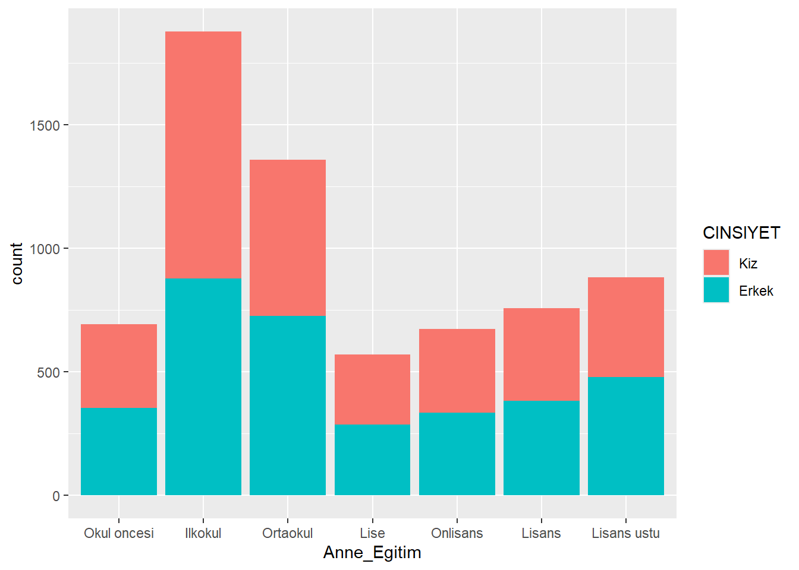
# yan yana
ggplot(midiPISA_filtered , aes(x = Anne_Egitim , fill = CINSIYET )) +
geom_bar(position = "dodge")Pek çok görselleştirmede, grafikteki eksen etiketlerini değiştirmek isteyebilirsiniz. Buradaki örnekte “CINSIYET” ve “Anne_Egitim” etiketleri biraz daha açıklayıcı hale getirilebilir.
Bir ggplot() grafiğinin etiketlerini değiştirmek için grafiğe + labs() katmanı eklenir. Bu katmanda x, y, ve fill etiketlerini, ayrıca grafiğin başlığını belirleyebilirsiniz.
ggplot(midiPISA_filtered , aes(x = Anne_Egitim , fill = CINSIYET )) +
geom_bar(position = "dodge") +
labs(x = "Eğitim Düzeyi",
fill = "CINSIYET",
y = "Sayi") 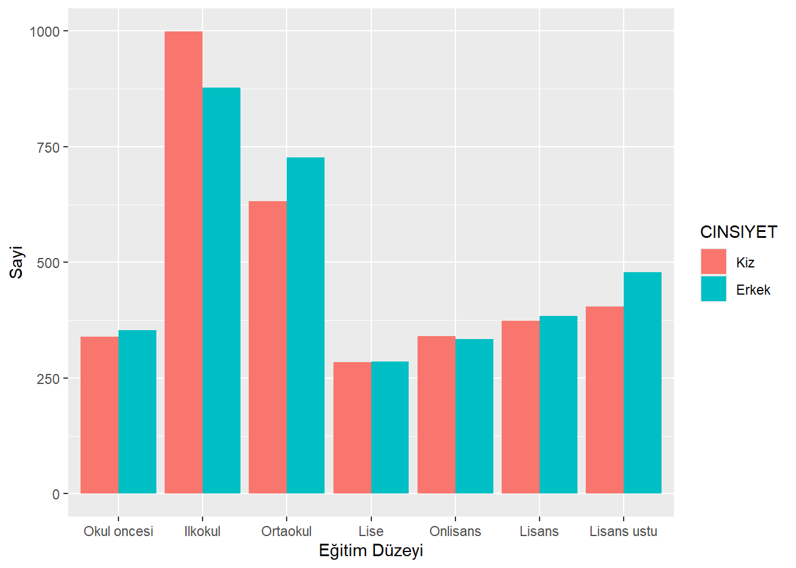
2 Sayılardan Oranlara
Bazen ham gözlem sayıları yararlı olsa da çoğu zaman oranlar daha ilgi çekicidir. Bu oranları kafamızdan hesaplamaya çalışabiliriz ama R ile açıkça hesaplamak çok daha kolaydır.
Her kategoriye düşen gözlemlerin toplam içindeki oranlarını görmek istiyorsak, önceki tablomuzu biraz değiştirmemiz gerekir. Bunun için her bir cinsiyet ve sınıf kombinasyonunda gözlemlerin toplam gözlemler içindeki oranını hesaplayan bir sütun eklemeliyiz.
Her düzeydeki gözlemleri saydıktan sonra, mutate() fonksiyonu ile bu düzeylere düşen gözlemlerin oranını hesaplarız. Bu oranları oran adlı yeni bir değişkene kaydederiz.
Daha önce olduğu gibi, uzun tabloyu geniş tabloya dönüştürürüz (pivot_wider()). Ancak burada tabloya eklenmiş ekstra bir sütun (n) vardır ve biz bu sütunu tabloda istemiyoruz. Bu nedenle id_cols argümanına, tabloya dahil etmek istediğimiz değişkenlerin isimlerini bir vektör olarak belirtmemiz gerekir. Böylece names_from ve values_from için kullanılan değişkenler dışında kalan sütunlar korunmuş olur.
midiPISA %>%
count(CINSIYET, SINIF) %>%
group_by(SINIF) %>%
mutate(oran = n / sum(n))%>%
pivot_wider(id_cols = CINSIYET,
names_from = SINIF, values_from = oran)3 Koşullu Oranlar
Değişkenler arasındaki sistematik ilişkilerle ilgileniyorsak, koşullu oranlara bakmamız gerekir.
Bu koşullu oranların tablosunu oluşturmak için, oranları hesaplamadan önce bir gruplama değişkeni belirtmemiz gerekir. Bu gruplamayı, group_by() fonksiyonu ile yaparız.
👉 Satırlara göre koşullandırma (yani satırların toplamı = 1).
ggplot(midiPISA, aes(x = CINSIYET, fill = SINIF)) +
geom_bar(position = "fill") 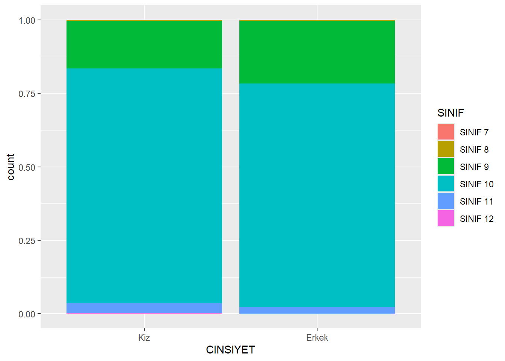
ggplot(midiPISA, aes(fill = CINSIYET, x= SINIF)) +
geom_bar(position = "fill") 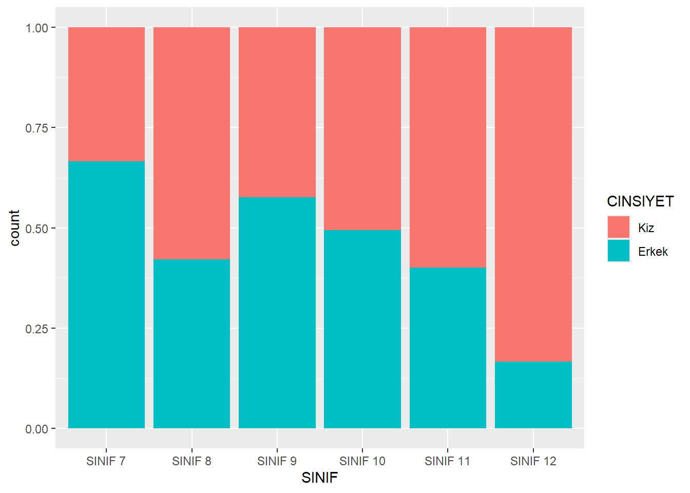
4 Tek ve İki Değişkenin Dağılımı
Tek bir değişken (örneğin CINSIYET) için frekans tablosu oluşturmak için yine count() fonksiyonunu kullanabiliriz. Bu daha basit tabloyu düşünmenin bir yolu da şudur: Orijinal iki yönlü tabloda (iki kategorik değişkenle) her bir SINIF düzeyindeki hücreleri toplayarak özetleyebiliriz.
midiPISA %>%
count(CINSIYET)midiPISA |>
count(CINSIYET,SINIF) %>%
pivot_wider(names_from = CINSIYET , values_from = n)5 Basit Çubuk Grafik
Basit çubuk grafik oluşturmanın sözdizimi oldukça basittir; bunu dersin başında görmüştük. Bunun için aes içinden fill = align argümanını çıkarmamız yeterlidir.
- cinsiyet
ggplot(midiPISA, aes(x = CINSIYET)) +
geom_bar()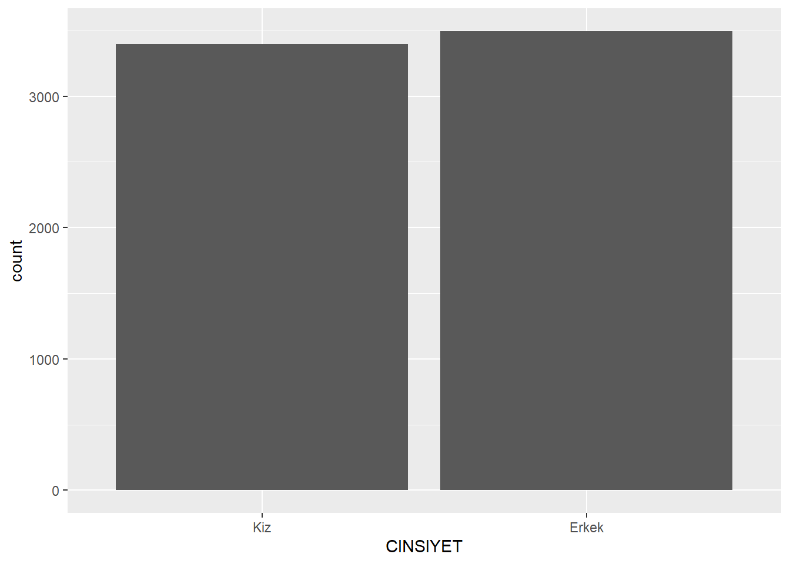
- sınıf düzeyi
# Yeni sıralamayla çubuk grafik
ggplot(midiPISA, aes(x = SINIF)) +
geom_bar(fill = "steelblue") +
labs(title = "Sınıf Düzeylerinin Dağılımı",
x = "Sınıf",
y = "Öğrenci Sayısı")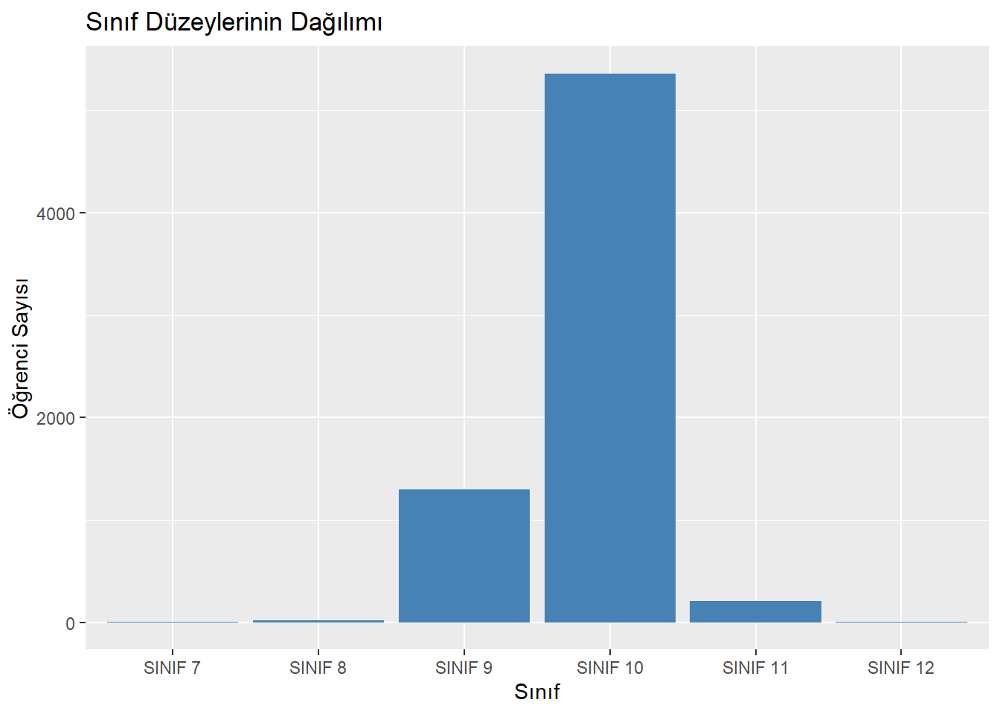
6 Faceting (Alt Grafikler)
Tek bir değişkenin dağılımını görselleştirmenin başka yararlı bir yolu, onu başka bir değişkenin belirli bir değerine göre koşullandırmaktır. Örneğin yalnızca 10. Sınıf öğrencileri için CINSIYET dağılımını görmek isteyebiliriz.
Bunu yapmak için:
Veri setini filtreleyip sadece SINIF= “10” olanlarla bir çubuk grafik çizebiliriz,
Ya da faceting tekniğini kullanabiliriz. Faceting, veriyi bir kategorik değişkenin düzeylerine göre alt gruplara ayırır ve her düzey için ayrı bir grafik oluşturur.
7 Facet’li Çubuk Grafikler
ggplot2’de faceting uygulamak için grafiğe sadece bir katman daha ekleriz. Bunun için facet_wrap() fonksiyonu kullanılır. İçine tilde (~) ve facet yapmak istediğimiz değişkenin adı yazılır (örn. ~SINIF).
Bu, yukarıdaki grafiği oluştur ama bunu SINIFdeğişkenine göre parçala anlamına gelir.
Yüm sınıf düzeyleri için grafikler elde edilir.
ggplot(midiPISA, aes(x = CINSIYET)) +
geom_bar() +
facet_wrap(~SINIF)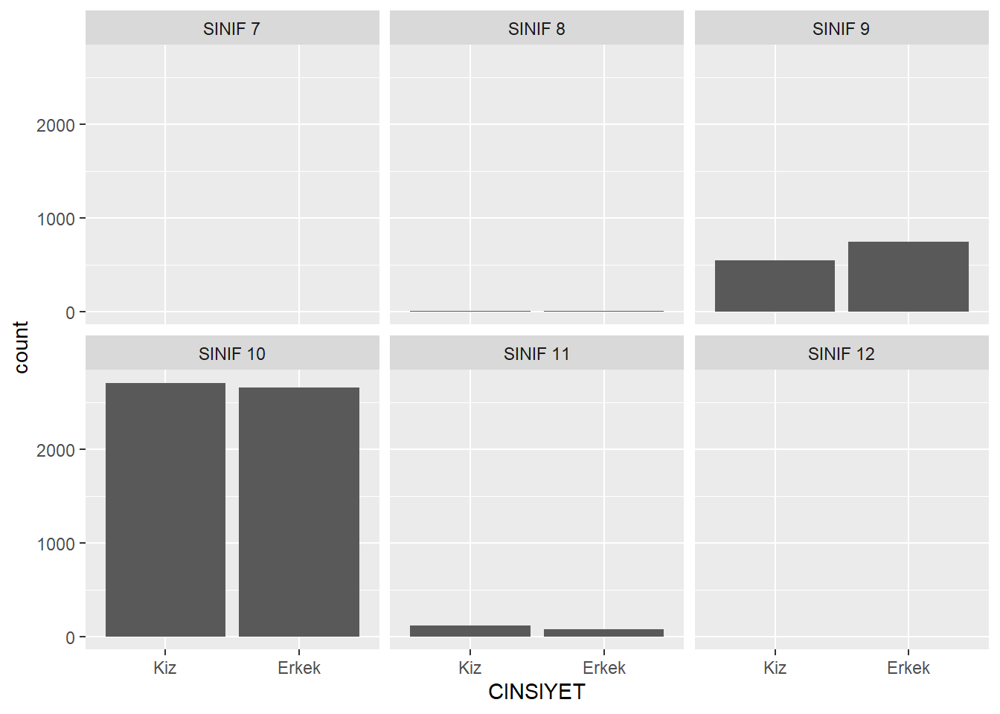
8 Faceting ve Yığma
Özünde, facet’li grafik dersin başında gördüğümüz yığılmış çubuk grafiklerin farklı bir düzenlemesidir.
Facet’ler ya da yığılmış çubuklar:
Tek bir değişkenin dağılımını görmek için tek bir facet’e ya da çubuğa,
Değişkenler arasındaki ilişkiyi görmek için facet’ler ya da çubuklar arasında karşılaştırma yapmaya olanak tanır.
ggplot(midiPISA, aes(x = CINSIYET ,fill = SINIF)) +
geom_bar() 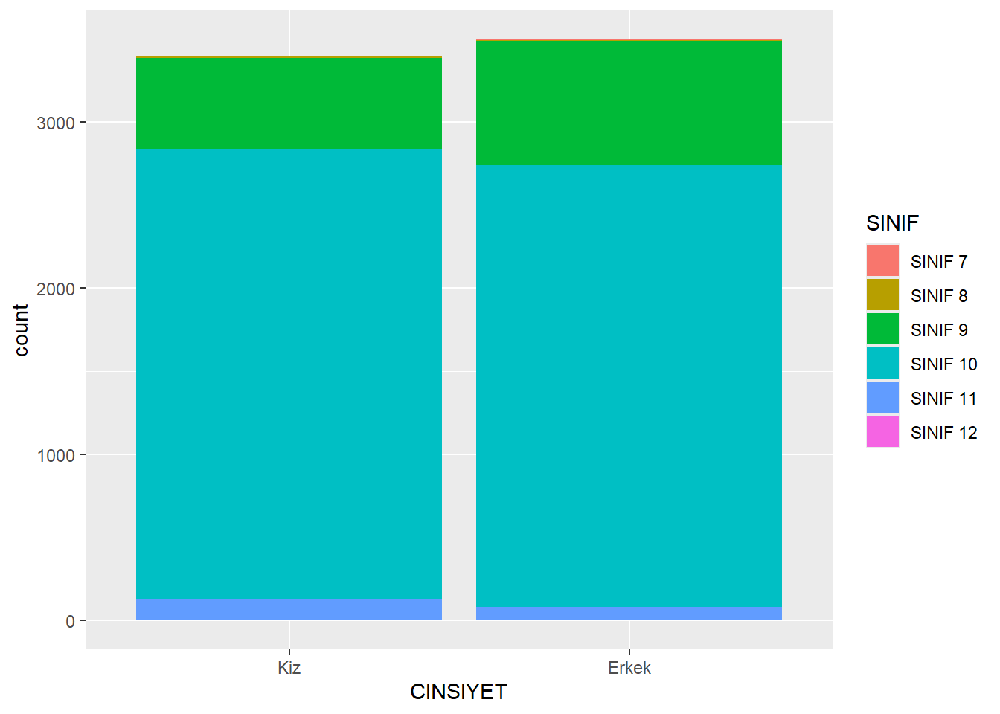
9 Pasta Grafiği
Pasta grafiği, kategorik verileri göstermenin yaygın bir yoludur. Dilimlerin büyüklüğü, o düzeydeki gözlem oranını gösterir.
- cinsiyete göre
library(dplyr)
pie_data <- midiPISA %>%
count(SINIF) %>%
mutate(prop = n / sum(n),
label = scales::percent(prop, accuracy = 1))
ggplot(pie_data, aes(x = "", y = prop, fill = SINIF)) +
geom_col(width = 1, color = "white") +
coord_polar("y") +
geom_text(aes(label = label),
position = position_stack(vjust = 0.5),
color = "white", size = 4) +
labs(title = "Sınıf Dağılımı (%)", fill = "Sınıf") +
theme_void()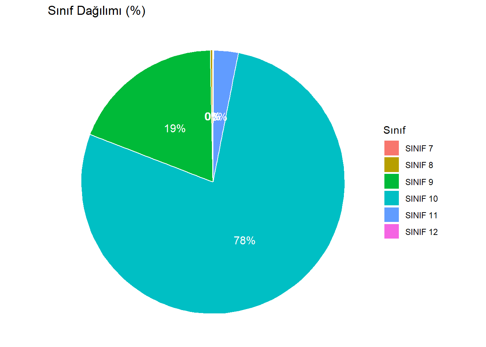
library(dplyr)
library(plotly)
Attaching package: 'plotly'The following object is masked from 'package:ggplot2':
last_plotThe following object is masked from 'package:stats':
filterThe following object is masked from 'package:graphics':
layout# Veri: SINIF değişkenine göre sayılar
pie_data <- midiPISA %>%
count(SINIF)
# Etkileşimli pie chart
plot_ly(pie_data,
labels = ~SINIF,
values = ~n,
type = "pie",
textinfo = "label+percent", # etiket + yüzde
insidetextorientation = "radial") %>%
layout(title = "Sınıf Dağılımı (Pie Chart - Plotly)")daha fazla bilgi
library(dplyr)
library(plotly)
# Veri özetini hazırlayalım
data_pie <- midiPISA %>%
count(SINIF) %>%
mutate(oran = n / sum(n),
label = paste0(SINIF, " (", round(oran * 100, 1), "%)"))
# Plotly pie chart
fig <- plot_ly(
data = data_pie,
labels = ~SINIF,
values = ~n,
type = 'pie',
text = ~label,
textinfo = 'text+percent',
hoverinfo = 'label+percent+value',
insidetextorientation = 'radial',
marker = list(
line = list(color = '#FFFFFF', width = 2) # Dilimler arası çizgiler
)
) %>%
layout(
title = list(text = "Sınıf Dağılımı (Pie Chart)", x = 0.5),
showlegend = TRUE
)
fig10 Dotplot
Sayısal verileri temsil etmenin en doğrudan yolu nokta grafiği (dotplot) kullanmaktır. Burada her bir gözlem, x-eksenindeki uygun değerine yerleştirilen bir nokta ile gösterilir. Benzer değerlere sahip gözlemler, diğerlerinin üstüne yığılır. Nokta grafiğini histogramın bir “kardeşi” gibi düşünebilirsiniz, ancak burada her sütunda kaç gözlem olduğunu tam olarak bilirsiniz, çünkü noktaları tek tek sayabilirsiniz. Önemli bir nokta ise, bu grafik histogramdan çok daha az bilgi kaybı içerir; hatta yalnızca bu grafik verilse bile veri setini neredeyse yeniden oluşturabilirsiniz. Tahmin edebileceğiniz gibi, gözlem sayısı çok arttığında bu grafikleri okumak zorlaşmaya başlar.
Aşağıdaki kod, veri setindeki rasgele seçilmiş 100 kişinin okumaktan alığı zevk için nokta grafiği üretmektedir. Dikkat ederseniz, yalnızca tek bir sayısal değişkenle (ağırlık) ilgilendiğimiz için estetiklerde (aesthetics) yalnızca bu değişken belirtilmiştir. Ayrıca, bu değişken x-estetiği olarak tanımlanmıştır çünkü sayısal bir değişkeni x-ekseninde göstermek “standart”tır. Son olarak, grafiğe noktaları eklemek için geom_dotplot() fonksiyonunun kullanıldığını görüyoruz. Bu fonksiyonun dotsize adlı isteğe bağlı bir argümanı vardır; bu argüman noktaların ne kadar büyük olacağını belirler (0’a yakın değerler noktaları küçültür, 1’e yakın değerler büyütür).
set.seed(100)
midiPISA_filtered %>% sample_n(100) %>%
ggplot( aes(x = OKUMA_ZEVK )) +
geom_dotplot(dotsize = 0.4)Bin width defaults to 1/30 of the range of the data. Pick better value with
`binwidth`.
Nokta grafiğinde dikkat edersek, y-ekseni biraz kafa karıştırıcıdır çünkü 0.0 ve 1.0 değerlerinin neyi ifade ettiği açık değildir. Bu durum, ggplot2’nin talihsiz bir sınırlılığıdır: x-ekseni boyunca gruplama (binning) ve y-ekseni boyunca yığma (stacking) işlemi, anlamlı olmayan bir y-ekseni ile sonuçlanır. Grafik çizim becerilerimiz ilerledikçe, y-ekseni tamamen gizlemeyi ya da noktaların sayısıyla daha uyumlu olacak şekilde ölçeği manuel olarak ayarlamayı tercih edebiliriz.
11 Histogram
En yaygın kullanılan grafik türlerinden biri histogramdır. Histogram, bu sorunu çözmek için noktaları x-ekseni boyunca kutulara (bin) toplar ve her sütunun yüksekliği, o kutuya düşen gözlem sayısını gösterir. Bu gruplama (binning) nedeniyle veri setini eksiksiz bir şekilde yeniden oluşturmak mümkün değildir; ancak bu yöntem, dağılımın genel şeklini daha net görmemizi sağlar.
Dikkat ederseniz, kodda değişen tek şey geom_dotplot() fonksiyonunun geom_histogram() ile değiştirilmesidir.
midiPISA %>%
ggplot( aes(x = OKUMA_ZEVK )) +
geom_histogram()`stat_bin()` using `bins = 30`. Pick better value with `binwidth`.Warning: Removed 69 rows containing non-finite outside the scale range
(`stat_bin()`).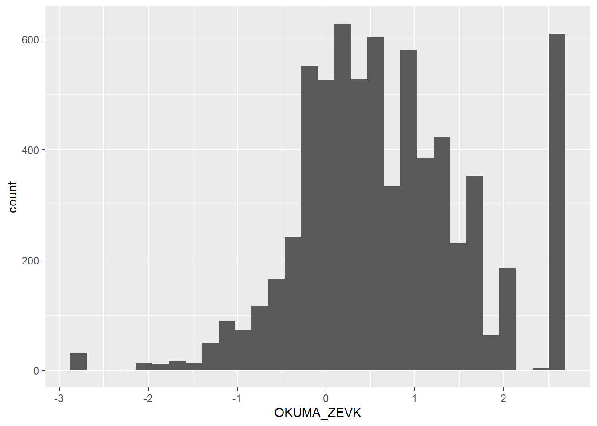
Not: Yukarıdaki kodu çalıştırdığımızda bir mesaj alıyoruz. Bu mesaj bize, uygun bir binwidth seçildiğini ve ayrıca 69 adet eksik değer bulunduğunu bildiriyor. Bu bir hata değil, yalnızca ggplot() fonksiyonunun size bilgi vermesidir!
11.1 Histogram kutuları (bins)
Eğer histogramın basamaklı (kesikli) yapısı sizi rahatsız ederse, birkaç seçeneğiniz vardır.
İlk olarak, bins veya binwidth argümanlarıyla oynayarak histogramın olabildiğince sürekli görünmesini sağlayacak kutu sayısını bulabilirsiniz.
İkinci olarak, bir sonraki bölümde göreceğimiz yoğunluk grafiği (density plot) kullanabilirsiniz.
ggplot2, varsayılan olarak mantıklı bir binwidth seçmeye çalışır; ancak bu seçeneği kendiniz belirleyerek geçersiz kılabilirsiniz. geom_histogram() içindeki bins ve binwidth argümanları, geom_dotplot() fonksiyonundaki dotsize argümanına benzer şekilde isteğe bağlıdır ve histogramın bir yönünü kontrol eder. Örneğin, binwidth = 5 seçersek histogram daha düzgün görünür. Alternatif olarak, geom_histogram()’ın varsayılanı olan 30 kutu yerine istediğimiz kutu sayısını belirtebiliriz.
midiPISA %>%
ggplot( aes(x = ODOKUMA1 )) +
geom_histogram(binwidth = 5)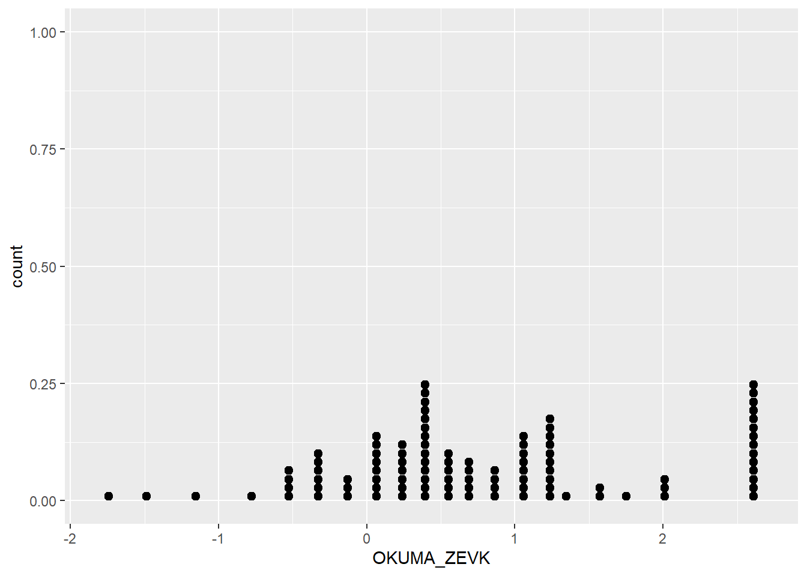
midiPISA %>%
ggplot( aes(x = ODOKUMA1 )) +
geom_histogram(binwidth = 30)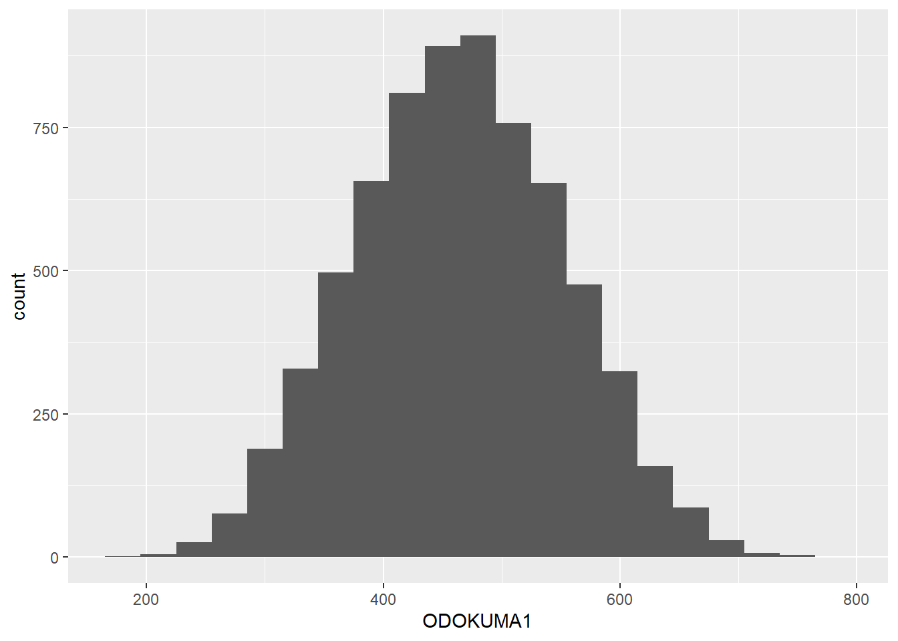
midiPISA %>%
ggplot( aes(x = ODOKUMA1 )) +
geom_histogram(binwidth = 60)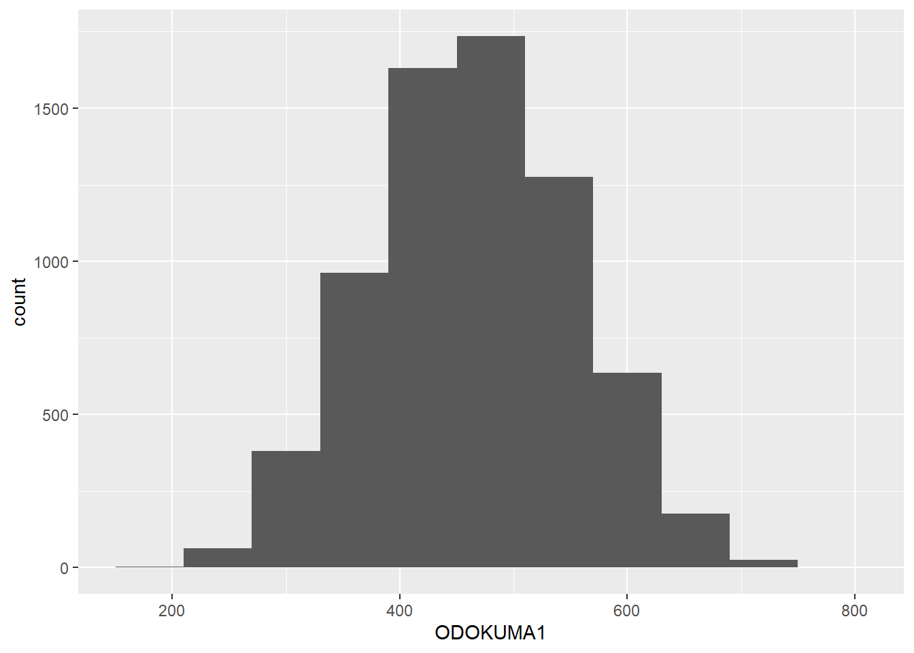
- grafiğe bilgi ekleme
library(ggplot2)
library(dplyr)
# Ortalama değerleri hesapla
mean_df <- midiPISA %>%
group_by(CINSIYET) %>%
summarise(mean_score = mean(ODOKUMA1, na.rm = TRUE))
# Histogram + Ortalama çizgisi + Etiket
midiPISA %>%
ggplot(aes(x = ODOKUMA1, fill = CINSIYET)) +
geom_histogram(binwidth = 30, alpha = 0.5, position = "identity", color = "white") +
geom_vline(
data = mean_df,
aes(xintercept = mean_score, color = CINSIYET),
linetype = "dashed",
size = 1
) +
geom_text(
data = mean_df,
aes(x = mean_score, y = 60, label = paste0("X̄ = ", round(mean_score, 1)), color = CINSIYET),
angle = 90,
vjust = -0.4,
hjust = 0
) +
labs(
title = "Öğrencilerin Okuma Puanları (Cinsiyete Göre)",
x = "Okuma Puanı",
y = "Frekans",
fill = "Cinsiyet",
color = "Cinsiyet"
) +
theme_minimal(base_size = 14)Warning: Using `size` aesthetic for lines was deprecated in ggplot2 3.4.0.
ℹ Please use `linewidth` instead.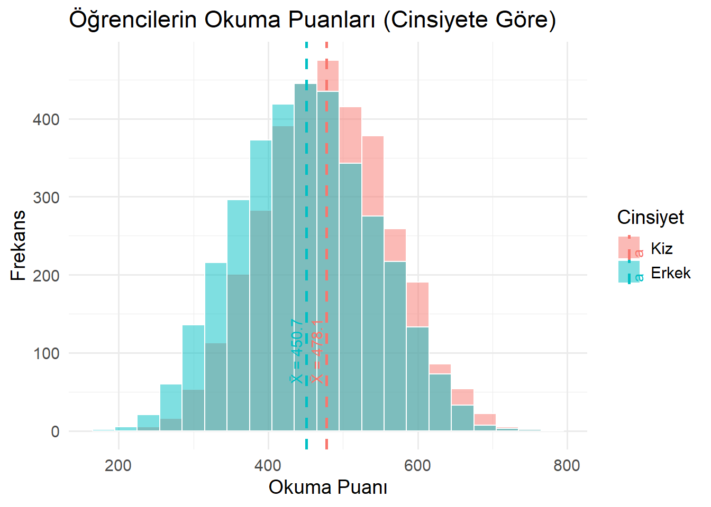
- histogram grafiğine bilgi ekleyelim
library(ggplot2)
library(dplyr)
# Genel ortalamayı hesapla
mean_val <- mean(midiPISA$ODOKUMA1, na.rm = TRUE)
# Histogram + Ortalama çizgisi + Etiket
midiPISA %>%
ggplot(aes(x = ODOKUMA1)) +
geom_histogram(binwidth = 30, fill = "#56B4E9", color = "white", alpha = 0.7) +
geom_vline(xintercept = mean_val, color = "red", linetype = "dashed", size = 1) +
geom_text(aes(x = mean_val, y = 60,
label = paste0("X̄ = ", round(mean_val, 1))),
color = "red", angle = 90, vjust = -0.4, hjust = 0) +
labs(
title = "Öğrencilerin Okuma Puanları",
x = "Okuma Puanı",
y = "Frekans"
) +
theme_minimal(base_size = 14)Warning in geom_text(aes(x = mean_val, y = 60, label = paste0("X̄ = ", : All aesthetics have length 1, but the data has 6890 rows.
ℹ Please consider using `annotate()` or provide this layer with data containing
a single row.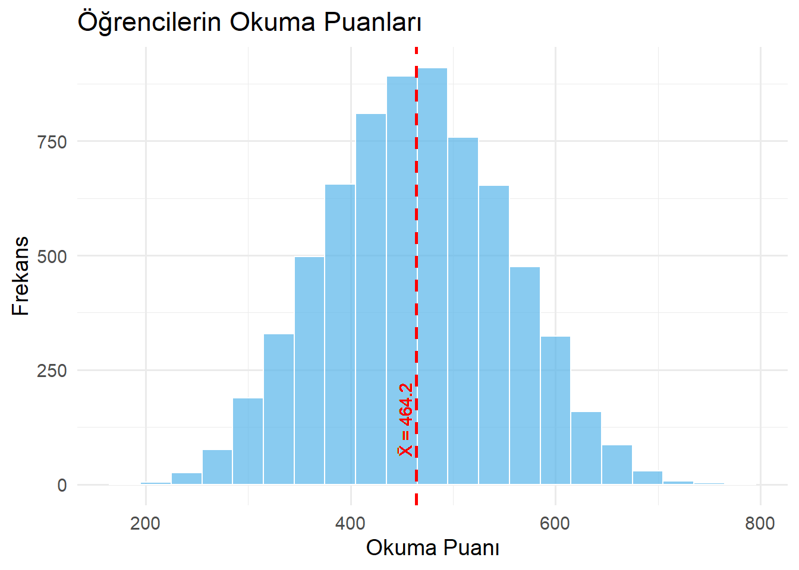
12 Yoğunluk grafiği (Density plot)
Yoğunluk grafiği, histogramın şeklini düzgün (smooth) bir çizgiyle temsil eder. Bunu, histogramın üzerine yumuşatılmış bir çizgi çizmek gibi düşünebilirsiniz; böylece dağılımın genel şeklini daha pürüzsüz bir şekilde gösterir. Ancak yoğunluk grafiği, verideki ani sıçramalara karşı oldukça hassastır, bu yüzden yalnızca büyük örneklemlerle kullanılması önerilir.
Kodumuzda değişen tek satır, fonksiyonun geom_density() olarak değiştirilmesidir.
midiPISA %>%
ggplot( aes(x = ODOKUMA1 )) +
geom_density()
12.0.1 Bandwidth (bant genişliği)
Yoğunluk grafiğinin daha düzgün görünmesini istiyorsak, grafiğin bandwidth (bant genişliği) değerini artırabiliriz. Bandwidth arttıkça grafik daha pürüzsüz hale gelir; daha küçük bandwidth değerleri ise daha dalgalı (volatil) görünümlere yol açar.
Peki grafiklerimiz için “en iyi” binwidth veya bandwidth değerini nasıl belirleyeceğiz? Genellikle varsayılan ayarlar makuldür; ancak farklı ölçeklerdeki yapıları görebilmek için hem daha pürüzsüz hem de daha ayrıntılı versiyonlarla oynamak iyi bir uygulamadır. Histogramdaki bins argümanına benzer şekilde, bandwidth değeri de geom_density() fonksiyonunun grafiği oluştururken kullandığı kutu sayısını belirler. Daha büyük bandwidth değerleri daha az kutu üzerinden yumuşatma yapar, bu yüzden daha pürüzsüz bir yoğunluk grafiği elde etmek için daha büyük bw değerleri seçebilirsiniz.
Aşağıdaki alıştırmada farklı bandwidth değerlerini deneyin.
midiPISA %>%
ggplot( aes(x = ODOKUMA1 )) +
geom_density(bw = 100)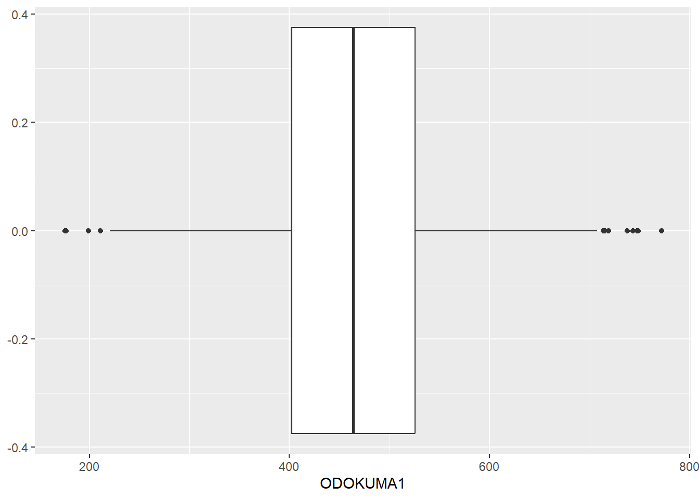
12.1 Kutu grafiği (Boxplot)
Histogram gibi, kutu grafiği (boxplot) de ham verileri doğrudan göstermez. Bunun yerine, verilerin özet istatistiklerini görselleştirir. Bir kutu grafiği:
Dağılımın merkezini (medyan),
Verilerin orta yarısını ayıran değerleri (birinci ve üçüncü çeyrekler),
Verilerin büyük çoğunluğunu gösteren değerleri (bıyıkların uçları)
çizer.
Dikkat ederseniz, R kodumuzda değişen tek satır geom_boxplot() fonksiyonunun kullanılmasıdır.
midiPISA %>%
ggplot( aes(x = ODOKUMA1 )) +
geom_boxplot()
Kutu, verilerin merkezi çoğunluğunu (büyük kısmını) temsil eder.
Bıyıklar, verilerin neredeyse tamamını kapsar.
Aykırı (uç) değerler ise noktalarla gösterilir.
13 Boxplotlar & Dotplotlar
Bir boxplot’un nasıl oluşturulduğunu daha iyi anlamak için önce bir dotplot’tan başlayalım.
Boxplot üç temel özet istatistik etrafında şekillenir:
Birinci çeyrek (Q1): Verilerin %25’i bu değerin altındadır.
İkinci çeyrek (Q2 / medyan): Verilerin %50’si bu değerin altındadır. Yani veri setinin tam ortasında yer alır.
Üçüncü çeyrek (Q3): Verilerin %75’i bu değerin altındadır.
Medyanın ikinci çeyrek olarak adlandırılmasının nedeni, verilerin yarısının (iki çeyreğin) onun altında, yarısının ise üstünde olmasıdır. Benzer şekilde, birinci çeyrek verilerin yalnızca dörtte birini (%25) altına alırken, üçüncü çeyrek verilerin dörtte üçünü (%75) altına alır.
Bu üç sayı, boxplot’taki kutuyu oluşturur:
Medyan ortada,
Q1 ve Q3 ise kutunun kenarlarında yer alır.
Bir boxplot’a baktığınızda her zaman bilmeniz gereken şey, verilerin orta yarısının bu kutunun içinde olduğudur.
Kutudan dışarı uzanan çizgilere “bıyıklar” (whiskers) denir. Bıyıkların nerede çizileceğine dair çeşitli kurallar vardır. ggplot2’nin kullandığı kural şudur:
- Kutunun uzunluğunu (IQR = Q3 − Q1) 1.5 ile çarpar,
Daha sonra alt ve üst sınırları (fences) şu şekilde belirler:
- **Alt sınır:** Q1 − 1.5 × IQR
- **Üst sınır:** Q3 + 1.5 × IQRBıyıklar, en fazla bu sınırlara kadar uzatılır. Eğer bir gözlem bu sınırların dışında kalıyorsa, aykırı değer (outlier) olarak noktalarla gösterilir.
📌 Boxplot’un en pratik özelliklerinden biri de budur: Verilerin büyük kısmından uzak olan değerleri otomatik olarak işaretleyerek potansiyel aykırı değerleri tespit etmenize yardımcı olur.
13.1 Yoğunluk grafikleri vs. kutu grafikleri
Kutu grafikleri, özellikle birden fazla dağılımı aynı anda karşılaştırmanız gerektiğinde ve aykırı değerleri tespit etmek istediğinizde gerçekten çok işe yarar. Ancak zayıf yönlerinden biri, bir dağılımın birden fazla tepe noktası (modu) olup olmadığını gösterememesidir.
Buradaki yoğunluk grafiğini düşünün: iki farklı tepe noktası (iki mod) vardır. Aynı dağılımın kutu grafiğini çizdiğimizde ise bu önemli yapı göz ardı edilir, çünkü kutu grafiği her zaman yalnızca tek bir kutu gösterir.
13.2 Kutu grafikleri ile aykırı değer tespiti
Bir kutu grafiği, dağılımın merkezi ve yayılımını göstermenin yanı sıra, aykırı değerleri tespit etmenin görsel bir yolunu da sunar. Örneğin, msrp (üretici tarafından önerilen satış fiyatı) değişkenine bu yöntemi uygulayarak, olağanüstü pahalı veya ucuz arabaları tespit edebilirsiniz.
# Kutu grafiği oluştur
midiPISA %>%
ggplot( aes(x = ODOKUMA1 )) +
geom_boxplot()
# Uç değerleri çıkar
midiPISA_no_out <- midiPISA |>
filter(ODOKUMA1 < 600)
#
ggplot(data = midiPISA_no_out, aes(x = ODOKUMA1)) +
geom_boxplot()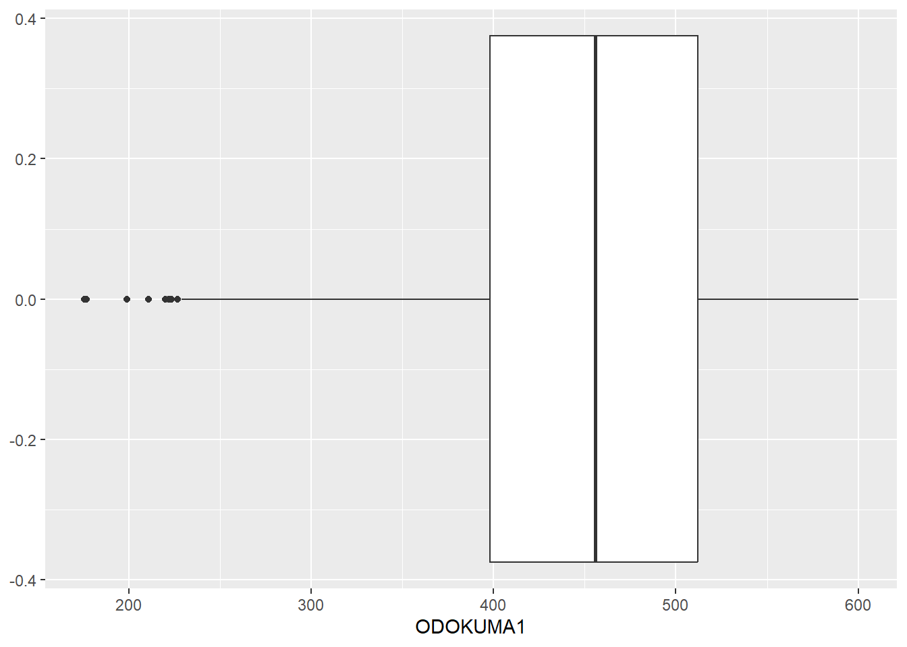
13.3 İki değişkenin görselleştirilmesi
İncelediğimiz grafiklere ikinci bir değişkeni dahil etmenin iki ana yolu vardır:
Facet eklemek (grafiği alt panellere ayırmak),
Renk eklemek (değerleri renklerle ayırt etmek).
# Histogram
midiPISA %>%
ggplot(aes(x = ODOKUMA1)) +
geom_histogram(binwidth = 10, fill = "skyblue", color = "white") +
labs(x = "Okuma Puanı", y = "Frekans",
title = "Histogram - ODOKUMA1")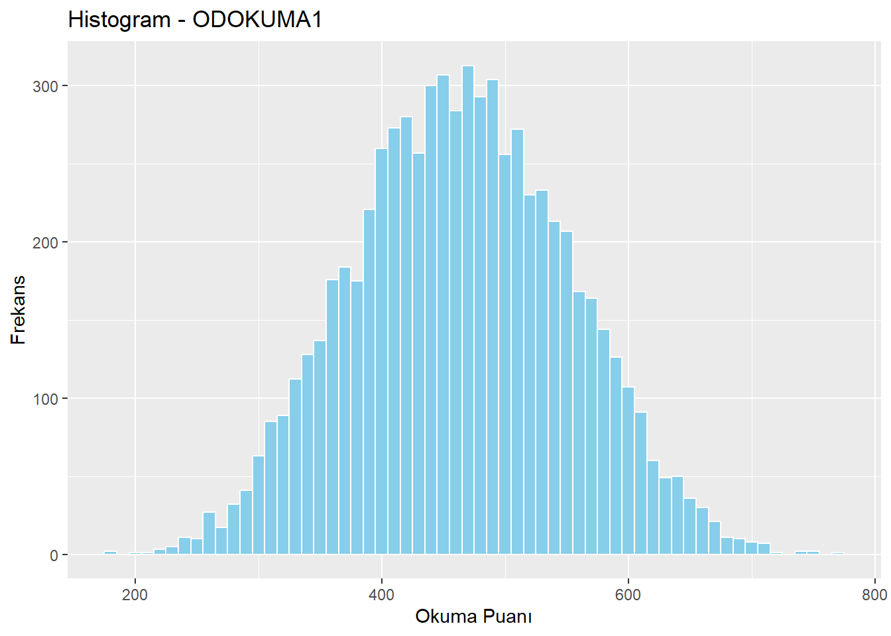
# Density Plot
midiPISA %>%
ggplot(aes(x = ODOKUMA1)) +
geom_density(fill = "lightgreen", alpha = 0.5) +
labs(x = "Okuma Puanı", y = "Yoğunluk",
title = "Density Plot - ODOKUMA1")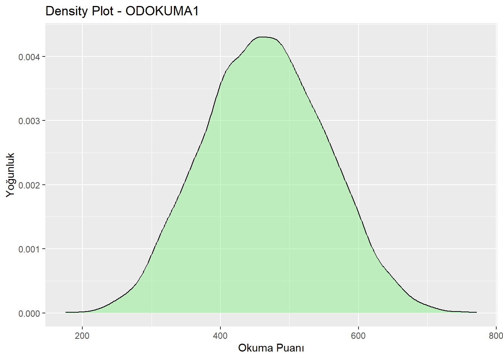
# Boxplot
midiPISA %>%
ggplot(aes(y = ODOKUMA1)) + # Boxplot'ta x yerine y kullanmak daha uygun
geom_boxplot(fill = "orange", alpha = 0.6) +
labs(y = "Okuma Puanı",
title = "Boxplot - ODOKUMA1")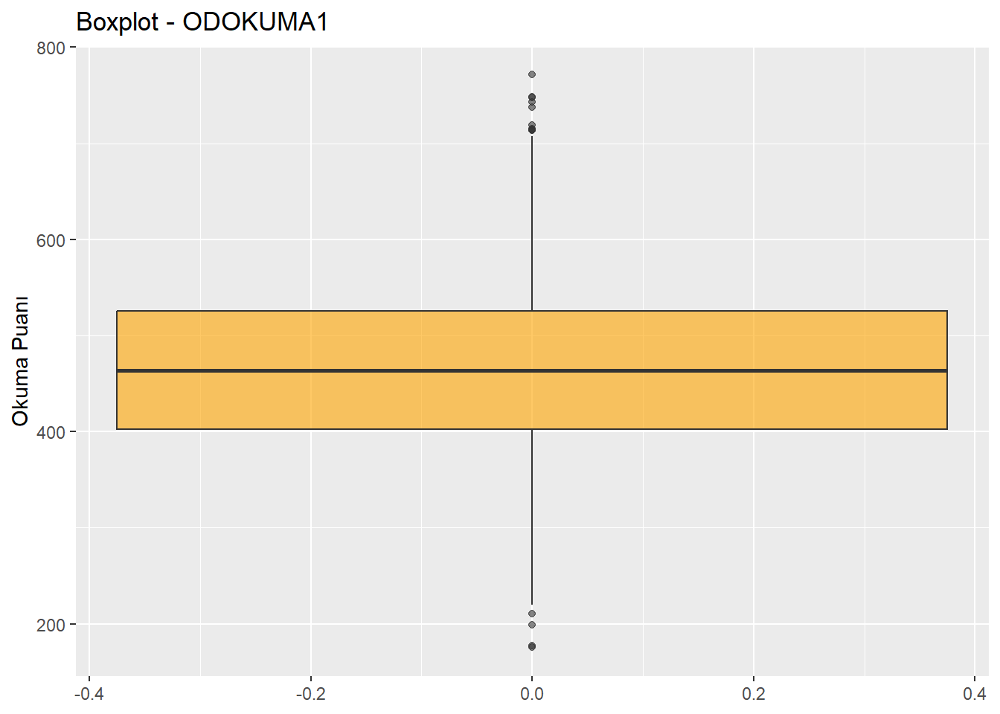
13.4 Facet’lenmiş histogramlar
Bu ayrı grafikleri oluşturmak için ggplot() fonksiyonuna bir facet_wrap() katmanı ekleyebiliriz. Facet yapmak istediğimiz değişkeni facet_wrap() fonksiyonunun içine yazıyoruz.
midiPISA%>%
ggplot(aes(x = ODOKUMA1)) +
geom_histogram(binwidth = 10, fill = "skyblue", color = "white") +
facet_wrap(~ CINSIYET) +
labs(x = "Okuma Puanı", y = "Frekans",
title = "ODOKUMA1 Dağılımı - Cinsiyete Göre Facet")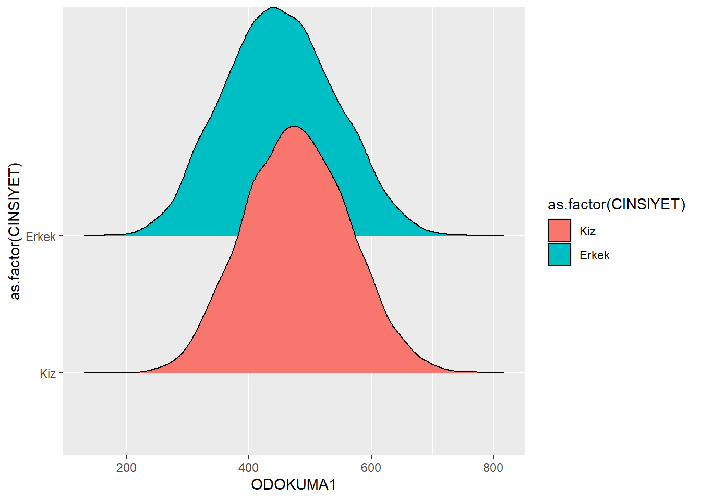
facet_wrap(~ CINS)ifadesi her cinsiyet için ayrı histogram çiziyor.- İsterseniz
~ OKUL_TURUveya başka kategorik değişkeni de koyabilirsiniz.
13.5 Renkli yoğunluk grafikleri (Colored density plots)
Değişkenliği karşılaştırmak, üst üste bindirilmiş yoğunluk grafikleri ile biraz daha kolaydır. Bu grafiğimizde iki yeni unsur var:
fill estetiği,
alpha seçeneği.
Fill estetiği, verilen kategorik değişkene bir renk atar.
Alpha argümanı ise yoğunluk grafiklerinin saydamlığını ayarlar. Normalde bu grafiklerin çakıştığı alanları görmek mümkün olmayacaktır. Ancak saydamlığı artırarak (alpha 1’den küçük bir değer seçilerek) grafiklerin üst üste gelen bölgelerini görebiliriz.
midiPISA %>%
ggplot(aes(x = ODOKUMA1, fill = CINSIYET)) +
geom_density(alpha = 0.5) +
labs(x = "Okuma Puanı",
y = "Yoğunluk",
title = "Cinsiyete Göre ODOKUMA1 Yoğunluk Dağılımı")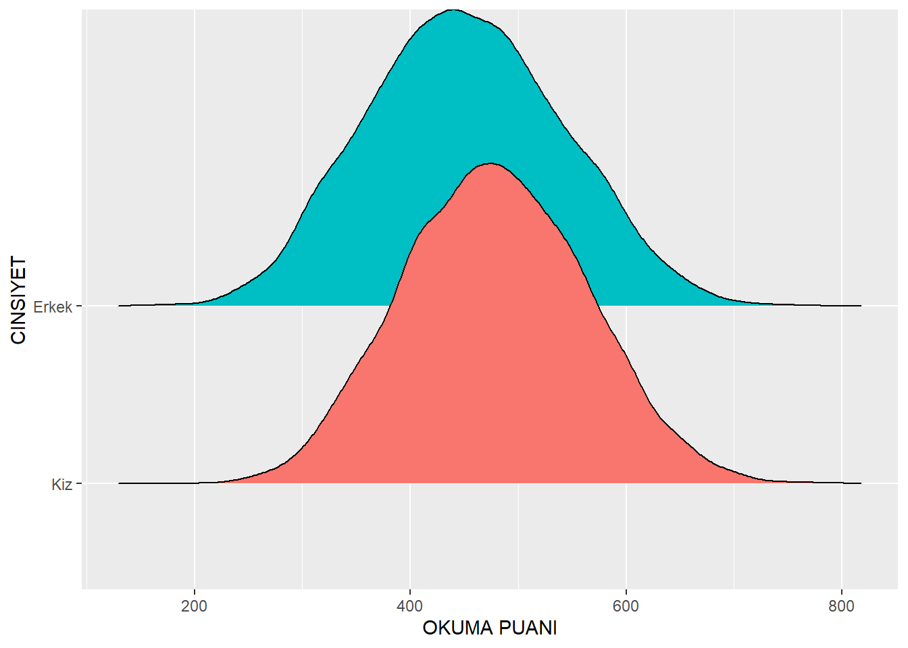
13.6 (Opsiyonel) Ridge Plotlar
Ridge plotlar (ridgeline plots), üst üste binen yoğunluk grafiklerini kademeli bir düzende göstermek için özellikle kullanışlıdır. Temelde, her yoğunluk grafiğini ayrı bir seviyeye ayırarak bir dağ silsilesi görünümü yaratır.
Bir ridge plot oluşturmak için ggridges paketini ve geom_density_ridges() fonksiyonunu kullanırız:
library(ggridges )Warning: package 'ggridges' was built under R version 4.4.3midiPISA |>
ggplot(aes(x = ODOKUMA1, y = as.factor(CINSIYET), fill = as.factor(CINSIYET))) + geom_density_ridges() Picking joint bandwidth of 15.3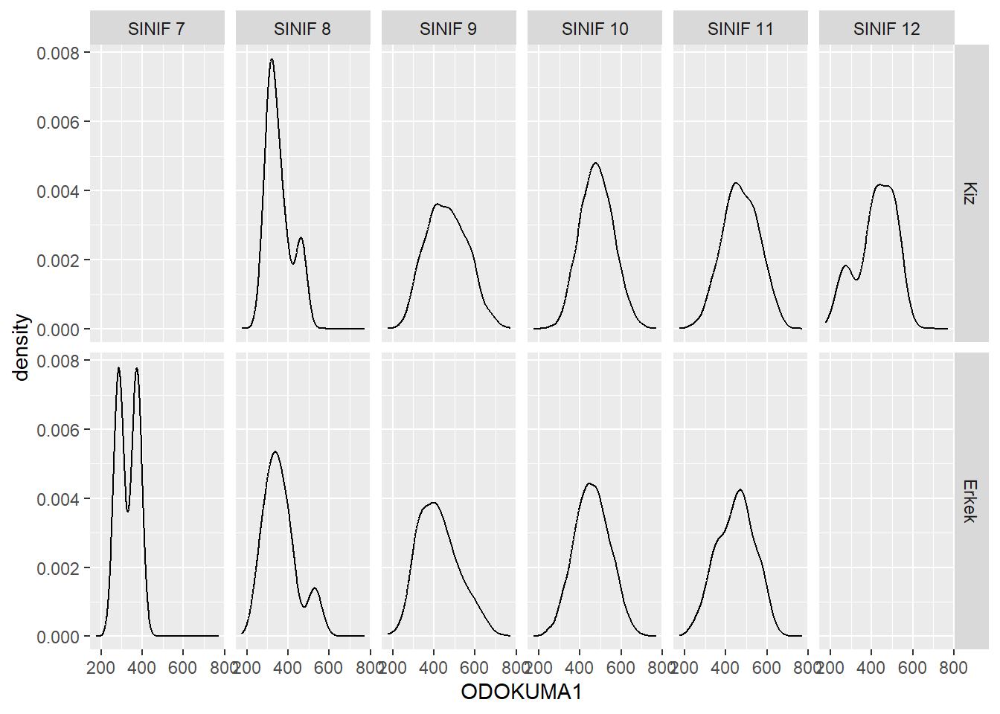
Burada kodun daha önceki örneklerle benzer olduğunu fark ediyoruz, ancak önemli bir fark var: y estetiğinin kullanılması.
y estetiği, hangi kategorik değişken temelinde kaç farklı “ridge” (sıra) çizileceğini belirtir.
13.7 Başlıkları ve Legend’ı Düzenleme
Grafiğin y-ekseninde görünen “as.factor(CINSIYET)” etiketi pek hoş görünmüyor, ama bunu değiştirmek mümkün!
labs() fonksiyonu grafik estetiklerinin (x, y, title, vb.) etiketlerini kontrol eder.
Örneğin y-ekseni etiketini değiştirmek için yeni ismi tırnak içinde belirtiriz.
Ayrıca fark ediyoruz ki, y-ekseni etiketi ile legend (açıklama kutusu) aynı şeyi gösteriyor. Bu durumda legend grafik için yeni bir bilgi sunmuyor ve kaldırılabilir.
Legend’ı kaldırmak için grafiğe bir theme() ekleriz ve legend.position = "hide" olarak ayarlarız:
midiPISA |>
ggplot(aes(x = ODOKUMA1, y = as.factor(CINSIYET), fill = as.factor(CINSIYET))) + geom_density_ridges() +
labs(y = "CINSIYET", x = "OKUMA PUANI") +
theme(legend.position = "hide") Picking joint bandwidth of 15.3
14 Daha yüksek boyutlarda görselleştirme
Bu derste size sürekli şu soruları düşünmenizi teşvik ettik:
“Bu değişken ile şu değişken arasındaki ilişki nedir?”
“Bu değişkenin belirli bir seviyesine koşullandırıldığında, diğer değişkenin dağılımı nasıl değişir?”
Bu sorulara yanıt bulmak çok değişkenli düşünmeyi gerektirir ve gerçek verinin yapısını anlamak için temel bir beceridir. Peki neden yalnızca iki değişkende kalalım?
14.1 3 değişken için grafikler
Üç değişken arasındaki ilişkiyi görselleştirmenin basit yollarından biri facet_grid() fonksiyonudur.
facet_wrap()gibi çalışır, fakat birden fazla değişkeni aynı anda kullanabilir.Böylece bir matris yapısında alt grafikler (subplots) oluşturur.
midiPISA|>
ggplot(aes(x = ODOKUMA1)) +
geom_density() +
facet_grid(CINSIYET ~ SINIF) Warning: Groups with fewer than two data points have been dropped.
Groups with fewer than two data points have been dropped.Warning in max(ids, na.rm = TRUE): no non-missing arguments to max; returning
-Inf
Warning in max(ids, na.rm = TRUE): no non-missing arguments to max; returning
-Inf
facet_grid()içinde ilk yazdığınız değişken satırlara (rows), ikinci yazdığınız değişken sütunlara (columns) yerleşir.Ancak grafik üzerinde hangi değişkenin satır, hangisinin sütun olduğunu görmek zor olabilir.
Bunu çözmek için
labeller = label_bothseçeneğini ekleyebiliriz.14.2
15 Daha yüksek boyutlu grafikler
Bu, çok boyutlu veri görselleştirmesinin yalnızca başlangıcıdır. Görsel olarak algılanabilen her şey (şekil, boyut, renk, desen, hareket, konum) bir değişkene eşlenebilir ve birlikte görselleştirilebilir.
Şekil (Shape)
Boyut (Size)
Renk (Color)
Desen (Pattern)
Hareket (Movement)
x-koordinatı
y-koordinatı
15.1 Sıra sizde!
https://kitap.epodder.org/veri-duzenleme-ve-gorsellestirme/ kitabı inceleyiniz
Bu hafta https://openintrostat.github.io/ims-tutorials/02-explore/ bu dört modülü ve lab egzersizlerini çalışmanızı istiyorum. Çalışmalarınızdan aldığınız notlerı rpubs sayfasında paylaşınız.